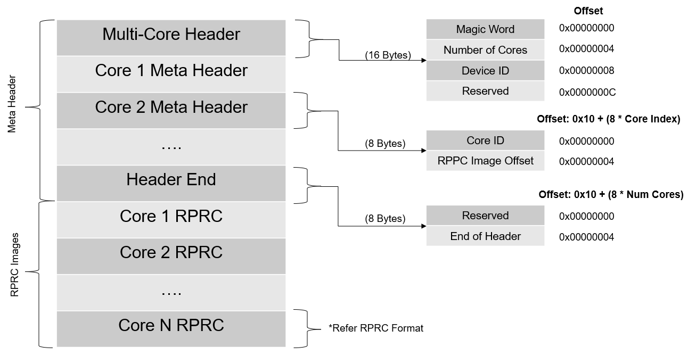
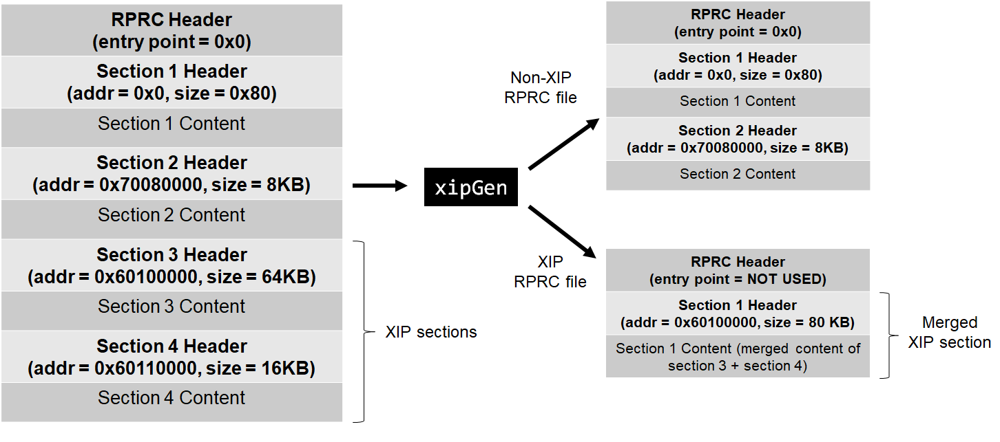

- Note
- To see the exact sequence of steps in which applications and secondary bootloader (SBL) are converted from compiler generated .out files to boot images, see the makefile
makefile_ccs_bootimage_gen that is included in every example and secondary bootloader (SBL) CCS project.
-
If you are using makefile based build, then see the file named
makefile in the example folder.
Introduction
This section describes the various tools that are used to create boot images for all the SDK applications
Important files and folders
| Folder/Files | Description |
| ${SDK_INSTALL_PATH}/tools/boot/ |
| multicoreImageGen/ | Tool to combine multiple RPRC into a single binary |
| out2rprc/ | Tool to convert compiler generated ELF .out for a CPU to a compact and loadable binary representation, called RPRC. |
| sbl_prebuilt/ | Pre-built secondary bootloader (SBL) images and flash configuration files for different supported EVMs, see also Flashing Tools |
| signing/ | Security signing scripts need to create boot images that can be booted by ROM bootloader (RBL)
|
| xipGen/ | Tool to split a RPRC file generated from out2rprc into two files containing non-XIP and XIP sections.
|
| uart_bootloader.py | Python script used to send the SBL and appimage binaries over UART using XMODEM protocol in UART boot mode |
| uart_uniflash.py | Python script used to flash SBL and applications to EVM flash using UART. See Flashing Tools for more details. |
Out2RPRC
- This tool converts the application executable (.out) into custom TI RPRC (.rprc) image - an image loadable by the secondary bootloader (SBL).
- This tool strips out the initialized sections from the executable file (*.out) and places them in a compact format that the SBL can understand.
- The output RPRC file is typically much smaller than the original executable (*.out) file.
- The RPRC files are intermediate files in a format that is consumed by
MulticoreImageGen tool that generates the final binary that is flashed (*.appimage)
- The RPRC file format contains header to various sections in the executable like section run address, size and a overall header which mentions the number of sections and the start offset to the first section.
- The RPRC magic word is
0x43525052 - which is ASCII equivalent for RPRC
- Shown below is the file header and section format for RPRC files.
- Given below are the structs used in the bootloader library to parse an RPRC image
typedef struct Bootloader_RprcFileHeader_s
{
uint32_t entry;
uint32_t rsvdAddr;
uint32_t sectionCount;
} Bootloader_RprcFileHeader;
typedef struct Bootloader_RprcSectionHeader_s
{
uint32_t rsvdAddr;
uint32_t rsvdCrc;
} Bootloader_RprcSectionHeader;
- This tool is provided as a minified JS script. To convert the application executable into RPRC image file, it can be used as
cd ${SDK_INSTALL_PATH}/tools/boot/out2rprc
${NODE} elf2rprc.js {input application executable file (.out)}
- RPRC mandates that the sections in the application image should be 8-byte aligned. Make sure that this is taken care in the linker.cmd file. Sample:
GROUP {
.text.hwi: palign(8)
.text.cache: palign(8)
.text.mpu: palign(8)
.text.boot: palign(8)
.text:abort: palign(8) /* this helps in loading symbols when using XIP mode */
} > OCRAM
Multi-core Image Gen
- This tool converts the RPRC files created for each CPU into a single combined multicore application image that can be booted by the secondary bootloader (SBL)
- Shown below is the file format for multicore image files.

Multi-core Image File Format
- Given below are the structs used in the bootloader library for parsing multicore images:
typedef struct Bootloader_MetaHeaderStart_s
{
uint32_t magicStr;
uint32_t numFiles;
uint32_t devId;
} Bootloader_MetaHeaderStart;
typedef struct Bootloader_MetaHeaderCore_s
{
uint32_t coreId;
uint32_t imageOffset;
} Bootloader_MetaHeaderCore;
typedef struct Bootloader_MetaHeaderEnd_s
{
uint32_t magicStringEnd;
} Bootloader_MetaHeaderEnd;
- The number of core meta headers present is equal to the number of cores included.
- The meta header magic word is
0x5254534D - which is ASCII equivalent for MSTR
- In Windows or Linux, use the following command to convert RPRC images into a multicore
.appimage file cd ${SDK_INSTALL_PATH}/tools/boot/multicoreImageGen
${NODE} multicoreImageGen.js --devID {DEV_ID} --out {Output image file (.appimage)} {core 1 rprc file}@{core 1 id} [ {core n rprc file}@{core n id} ... ]
- In case of AM64X,
DEV_ID is 55.
- The various core ID to be used are as below.
| CORE | CORE ID |
| r5fss0-0 | 4 |
| r5fss0-1 | 5 |
| r5fss1-0 | 6 |
| r5fss1-1 | 7 |
| m4fss0-0 | 14 |
Signing Scripts
- To run these scripts, one needs
openssl installed as mentioned here, OpenSSL
- Signing scripts are a collection of scripts needed to sign ROM images (image booted by ROM - mostly the SBL) and application images (image booted by the SBL)
- The RBL requires the boot image (mostly SBL), to be signed always, even if we are not using secure boot.
- We follow a combined boot method for ROM images. Here the ROM Bootloader (RBL) boots the SBL, SYSFW and BOARDCFG together. The boot image would be a binary concatenation of x509 Certificate, SBL, SYSFW, BOARDCFG (and the SYSFW inner certificate in case of HS device) binary blobs. We use a python script to generate this final boot image. This script has a dependency on
openssl as mentioned before, so make sure you've installed it. To generate a combined boot image, one can do as below:
- For GP devices
cd ${SDK_INSTALL_PATH}/source/security/security_common/tools/boot/signing
${PYTHON} rom_image_gen.py --swrv 1 --sbl-bin <path-to-sbl-binary> --sysfw-bin <path-to-sysfw-binary> --boardcfg-blob <path-to-boardcfg-binary-blob> --sbl-loadaddr ${SBL_RUN_ADDRESS} --sysfw-loadaddr ${SYSFW_LOAD_ADDR} --bcfg-loadaddr ${BOARDCFG_LOAD_ADDR} --key ${BOOTIMAGE_CERT_KEY} --rom-image <path-to-output-image>
- For HS devices, we have to pass the HS SYSFW binaries and also the SYSFW inner certificate to the signing script.
cd ${SDK_INSTALL_PATH}/source/security/security_common/tools/boot/signing
${PYTHON} rom_image_gen.py --swrv 1 --sbl-bin <path-to-sbl-binary> --sysfw-bin <path-to-sysfw-binary> --sysfw-inner-cert <path-to-sysfw-inner-cert-binary> --boardcfg-blob <path-to-boardcfg-binary-blob> --sbl-loadaddr ${SBL_RUN_ADDRESS} --sysfw-loadaddr ${SYSFW_LOAD_ADDR} --bcfg-loadaddr ${BOARDCFG_LOAD_ADDR} --key ${BOOTIMAGE_CERT_KEY} --debug DBG_FULL_ENABLE --rom-image <path-to-output-image>
- By default SBLs provided in SDK are signed with full debug enable since this is needed for development. You can see from
--debug switch used above. Once moved to production please remove this switch from the makefile.
- For SBL images or examples which is loaded by SBL, we use a different signing script. This is solely because of the x509 certificate template differences between ROM and SYSFW. In GP devices appimages are not signed. The signing happens only in HS devices. The script usage is:
cd ${SDK_INSTALL_PATH}/source/security/security_common/tools/boot/signing
$(PYTHON) appimage_x509_cert_gen.py --bin <path-to-the-binary> --authtype 1 --key <signing-key-derived-from-devconfig> --output <output-image-name>
- In the case of encryption, two extra options are also passed to the script like so:
cd ${SDK_INSTALL_PATH}/source/security/security_common/tools/boot/signing
$(PYTHON) appimage_x509_cert_gen.py --bin <path-to-the-binary> --authtype 1 --key <signing-key-derived-from-devconfig> --enc y --enckey <encryption-key-derived-from-devconfig> --output <output-image-name>
- These scripts are invoked in makefiles, and the image generation happens automatically along with the example build. So mostly these scripts need not be manually run.
- Here,
SBL_RUN_ADDRESS is 0x70000000- In the case of GP device,
BOOTIMAGE_CERT_KEY is rom_degenerateKey.pem
- In the case of HS device,
BOOTIMAGE_CERT_KEY is custMpk_am64x_am243x.pem. For more details about this see Enabling Secure Boot
These scripts are invoked in makefiles, and the image generation happens automatically along with the example build. So mostly these scripts need not be manually run. If the user build-system is different from TI's makefile system, it needs to be ensured that the same is followed as part of the post build steps. The devconfig has ENC_SBL_ENABLED=yes and that is why for HS-SE devices, the SBL image is encrypted by default.
XIP Image Generator Tool
- This tool, splits a input RPRC application file, into two RPRC files,
- First RPRC file, containing non-XIP sections and the application entry point
- Second RPRC file, containing XIP sections. Here, adjacent sections are merged into one section
- The final number of sections in both RPRC files taken together can be less than the sections in the input file due to section merging in the XIP RPRC file.

XIP Image Generation Tool flow
- The non-XIP RPRC file should be flashed and booted via SBL as usual
- The XIP RPRC file should be flashed via the SDK flash writer, using the command
--flash-xip, the flash writer in this case will flash sections at the flash address mentioned in the RPRC section header.
- To see the detailed options supported by the tool, run this tool with the option
--help. Example, output in Windows is shown below,
> cd {SDK_INSTALL_PATH}/tools/boot/xipGen
> xipGen.exe
XIP Image Creation Tool - (c) Texas Instruments 2021, created on Apr 19 2021
Usage: xipGen [options]
Description,
This tool, splits a input RPRC application file, into two RPRC files,
- First RPRC file, containing non-XIP sections. The application entry point is assumed
to be in non-XIP region.
- Second RPRC file, containing XIP sections. The RPRC entry point is set to 0 and
adjacent XIP sections are merged
Note, the final number of sections in both RPRC files taken together can be less
than the sections in the input file due to section merging in the XIP RPRC file.
The non-XIP RPRC file should be flashed and booted via SBL as usual
The XIP RPRC file should be flashed via the SDK flash writer, the flash writer will
flash sections at the flash address mentioned in the RPRC sections
Options,
--input, -i : input RPRC file,
--output, -o : output RPRC file of non-XIP sections,
--output-xip, -x : output RPRC file of XIP sections,
--flash-start-addr, -f : XIP flash address space start, specified in hex. If not specified 0x60000000 is used
--flash-size, -s : XIP flash address space size in units of mega bytes, specified as integer. If not specified 256 MB is used
--verbose, -v : Verbose prints are enabled during the tool execution
--help, -h : Shows this help
UART Bootloader Python Script
- This script is used in UART boot mode for sending the SBL and appimage binaries to the EVM via UART using XMODEM protocol
- Make sure that python3 and its dependent modules are installed in the host machine as mentioned in Python3
- Booting via UART is slow, but is useful if application loading via CCS or OSPI boot is not an option
- Make sure the UART port used for terminal is identified as mentioned in Setup UART Terminal
- Make sure you have the EVM power cable and UART cable connected as shown in Cable Connections
- To boot applications using this script, POWER OFF the EVM
- Switch to UART BOOT MODE.
- POWER ON the EVM
- To confirm that the board is in UART boot mode, open the UART terminal and confirm that you see the character 'C' getting printed on the console every 2-3 seconds.
- Now close the terminal. This is important as the script won't be able to function properly if the UART terminal is open.
- Open a command prompt and run the below command to send the SBL and application binary to the EVM
cd ${SDK_INSTALL_PATH}/tools/boot
python uart_bootloader.py -p COM<x> --bootloader=sbl_prebuilt/{board}/sbl_uart.release.tiimage --file=< path to multicore appimage of application binary >
- When you execute this, the script first sends the uart bootloader, and then the multicore appimage
- After the multicore appimage is successfully parsed, the uart bootloader sends an acknowledgment to the script and waits for 5 seconds before running the application binary
- Upon receiving the ack, the script will exit successfully
- Connect to the UART terminal within 5 seconds to see logs from the application
- Below are the logs of the script after all the files have been sent
Sending the UART bootloader sbl_prebuilt/{board}/sbl_uart.release.tiimage ...
Sent bootloader sbl_prebuilt/{board}/sbl_uart.release.tiimage of size 243975 bytes in 23.94s.
Sending the application ../../examples/drivers/udma/udma_memcpy_polling/{board}/r5fss0-0_nortos/ti-arm-clang/udma_memcpy_polling.release.appimage ...
Sent application ../../examples/drivers/udma/udma_memcpy_polling/{board}/r5fss0-0_nortos/ti-arm-clang/udma_memcpy_polling.release.appimage of size 99580 bytes in 11.74s.
[STATUS] Application load SUCCESS !!!
Connect to UART in 2 seconds to see logs from UART !!!
USB Bootloader Python Script
- This script is used in DFU boot mode for sending the SBL and appimage binaries to the EVM via USB DFU.
- Make sure that dfu-util tool is installed properly and the DFU enumeration is verified.
- Make sure that python3 and its dependent modules are installed in the host machine as mentioned in Python3
- Change the boot mode to DFU boot mode EVM Setup
- POWER cycle the EVM
- Open a command prompt and run the below command to send the SBL and application binary to the EVM
cd ${SDK_INSTALL_PATH}/tools/boot
python usb_bootloader.py --bootloader=sbl_prebuilt/{board}/sbl_dfu.release.hs_fs.tiimage --file=< path to multicore appimage of application binary
- When you execute this, the script first sends the SBL USB bootloader, and then the multicore appimage
- Connect to the UART terminal to see the booting information
- Below are the logs of the script after all the files have been sent
INFO: Bootloader_loadSelfCpu:207: CPU r5f0-0 is initialized to 800000000 Hz !!!
INFO: Bootloader_loadSelfCpu:207: CPU r5f0-1 is initialized to 800000000 Hz !!!
[BOOTLOADER_PROFILE] Boot Media : USB DFU
[BOOTLOADER_PROFILE] Boot Image Size : 114 KB
[BOOTLOADER_PROFILE] Cores present :
m4f0-0
r5f1-0
r5f1-1
r5f0-0
r5f0-1
[BOOTLOADER PROFILE] CPU load : 200191us
[BOOTLOADER_PROFILE] SBL Total Time Taken : 200192us
Image loading done, switching to application ...
INFO: Bootloader_runCpu:155: CPU m4f0-0 is initialized to 400000000 Hz !!!
INFO: Bootloader_runCpu:155: CPU r5f1-0 is initialized to 800000000 Hz !!!
INFO: Bootloader_runCpu:155: CPU r5f1-1 is initialized to 800000000 Hz !!!
INFO: Bootloader_runSelfCpu:217: All done, reseting self ...
[IPC NOTIFY ECHO] Message exchange started by main core !!!
[m4f0-0] 0.030020s : [IPC NOTIFY ECHO] Remote Core waiting for messages from main core ... !!!
[r5f0-1] 0.002099s : [IPC NOTIFY ECHO] Remote Core waiting for messages from main core ... !!!
[r5f0-1] 2.338054s : [IPC NOTIFY ECHO] Remote core has echoed all messages !!!
[r5f1-0] 0.022147s : [IPC NOTIFY ECHO] Remote Core waiting for messages from main core ... !!!
[r5f1-0] 2.358900s : [IPC NOTIFY ECHO] Remote core has echoed all messages !!!
[r5f1-1] 0.015147s : [IPC NOTIFY ECHO] Remote Core waiting for messages from main core ... !!!
[r5f1-1] 2.351658s : [IPC NOTIFY ECHO] Remote core has echoed all messages !!!
[IPC NOTIFY ECHO] All echoed messages received by main core from 4 remote cores !!!
[IPC NOTIFY ECHO] Messages sent to each core = 1000000
[IPC NOTIFY ECHO] Number of remote cores = 4
All tests have passed!!
[m4f0-0] 3.568946s : [IPC NOTIFY ECHO] Remote core has echoed all messages !!!
Linux Appimage Generator Tool
- This tool generates a Linux Appimage by taking the Linux binaries (ATF, OPTEE, SPL) as input and generates a Linux appimage containing the input Linux binaries.
- The input file location can be mentioned in the
config.mak file located at {SDK_INSTALL_PATH}/tools/boot/linuxAppimageGen
PSDK_LINUX_PREBUILT_IMAGES=/board-support/prebuilt-images
- The input file names for ATF, OPTEE and SPL can also be mentioned in the
config.mak file.
#Input linux binaries
ATF_BIN_NAME=bl31.bin
OPTEE_BIN_NAME=bl32.bin
SPL_BIN_NAME=u-boot-spl.bin-am64xx-evm
- The load address for ATF, OPTEE and SPL need to be mentioned in the
config.mak file.
#Linux image load address
ATF_LOAD_ADDR=0x0701a0000
OPTEE_LOAD_ADDR=0x9e800000
SPL_LOAD_ADDR=0x80080000
- The output appimage name can be mentioned in the
config.mak file.
#Output appimage name
LINUX_BOOTIMAGE_NAME=linux.appimage
- Run the makefile at {SDK_INSTALL_PATH}/tools/boot/linuxAppimageGen to generate the Linux appimage
- For Windows
cd ${SDK_INSTALL_PATH}/tools/boot/linuxAppimageGen
gmake -s all
- For Linux
cd ${SDK_INSTALL_PATH}/tools/boot/linuxAppimageGen
make -s all
- The Linux appimage wil be generated at {SDK_INSTALL_PATH}/tools/boot/linuxAppimageGen after running the makefile
SoC ID parser Python Script
- Boot ROM reports SoC ID on UART console of the device when UART boot mode is selected. It reports on both GP and HS devices and it provides insights into device configuration which would be helpful for debugs.
- uart_boot_socid.py is a python3 based parser to convert the hexadecimal numbers reported by ROM to human readable text, below are the steps involved to use this parser. This will be helpful in debugging the device boot issue. This will also help to see important information about device like device type, prime/non-prime, key count, key revision, MPK hash etc.
- Make sure python3 is installed as mentioned in Python3
- Steps to use the parser:
- Copy the soc id reported in UART console
- pass the copied id to the script either as a plain string or saving it into a file
- execute the script
$python uart_boot_socid.py -d am64x --string=<copied soc id>
or
$python uart_boot_socid.py -d am64x --file=soc_id.txt
- Example Output:
-----------------------
SoC ID Header Info:
-----------------------
NumBlocks : 2
-----------------------
SoC ID Public ROM Info:
-----------------------
SubBlockId : 1
SubBlockSize : 26
DeviceName : am64x
DeviceType : HSSE
DMSC ROM Version : [0, 2, 0, 0]
R5 ROM Version : [0, 2, 0, 0]
-----------------------
SoC ID Secure ROM Info:
-----------------------
Sec SubBlockId : 2
Sec SubBlockSize : 166
Sec Prime : 0
Sec Key Revision : 1
Sec Key Count : 1
Sec TI MPK Hash : b018658ad99dc903c8c9bfb27b12751099920a042ad1dfea7b7ba57369f15546de285edde6a7b39a8bdc40a27b237f8fb1e57f245e80b929c1e28b024aa2ecc6
Sec Cust MPK Hash : 1f6002b07cd9b0b7c47d9ca8d1aae57b8e8784a12f636b2b760d7d98a18f189760dfd0f23e2b0cb10ec7edc7c6edac3d9bdfefe0eddc3fff7fe9ad875195527d
Sec Unique ID : 01f22176afca3a82692ce53b2738b8c982f7538602871e0bdb7dc2f7668d04b2
 1.8.20
1.8.20